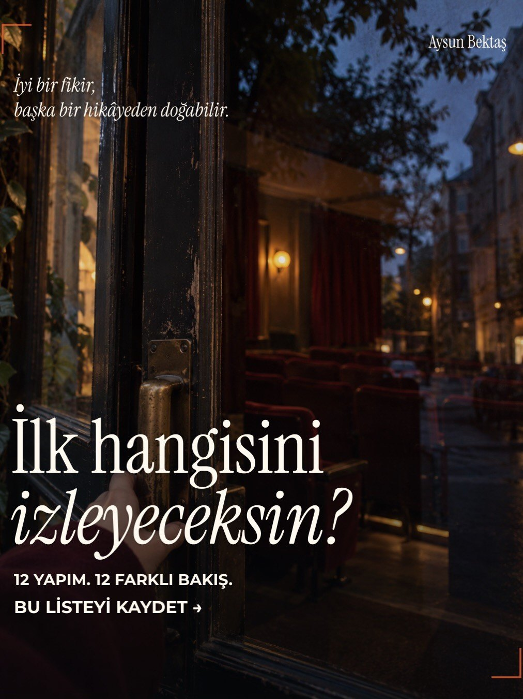

Merhaba,
Bir fikrin nasıl büyüdüğünü, bir markanın nasıl anlam kazandığını ya da bir insanın işinde nasıl ustalaştığını izlemek, kendi yaptıklarımıza da başka bir gözle bakmamızı sağlıyor.
Bu yazıda yaratıcılığı besleyecek, markalara ve insan davranışlarına farklı bakmamızı sağlayacak 12 film, belgesel ve diziyi bir araya getirdim. Her birinde aynı soruyu sordum: "Peki, bu bizim için ne demek?"
Bir sonraki "Ne izlesem?" akşamı için listeniz hazır.
01 · BelgeselArt & Copy
Yaratıcılık ve reklam
"Just Do It" gibi kampanyaların arkasındaki reklamcılar, fikirlerin nasıl doğduğunu anlatıyor.
Neden izlemeli? Bir reklam fikrinin hangi içgörüden doğduğunu görmek için.
- Büyük fikir, masaya iyi bir içgörüyle gelindiğinde ortaya çıkıyor. Ajansa brief verirken "ne istiyoruz" kadar "tüketici hakkında ne biliyoruz" sorusunu da yazmak gerekiyor.
02 · Belgesel dizisiThe Century of the Self
Tüketim ve psikoloji
Adam Curtis, psikoloji ile reklam ve halkla ilişkiler arasındaki bağı tarihsel örneklerle inceliyor.
Neden izlemeli? Satın alma isteğinin nasıl şekillendirildiğini sorgulamak için.
- Tüketici çoğu zaman bir ürünü değil, o ürünle olmak istediği kişiyi satın alıyor. Bu gücü bilmek, onu sorumlulukla kullanmayı da gerektiriyor.
03 · BelgeselJiro Dreams of Sushi
Ustalık ve deneyim
Jiro Ono'nun Tokyo'daki küçük suşi restoranında, kusursuzluğa adanmış bir çalışma düzenini izliyoruz.
Neden izlemeli? Üründen hizmete, tutarlı bir deneyimin nasıl kurulduğunu görmek için.
- Marka, her gün aynı özenle tekrarlanan küçük detaylardan oluşuyor. Tutarlılık en sessiz ama en güçlü pazarlama aracı.
04 · BelgeselThe Creative Brain
Yaratıcı düşünme
David Eagleman, farklı alanlardan yaratıcı insanların yeni fikirleri nasıl geliştirdiğini araştırıyor.
Neden izlemeli? Yaratıcılığı geliştiren alışkanlıklar üzerine düşünmek için.
- Yaratıcılık bir ilham anı değil, beslenen bir kas. Farklı alanlardan okumak, izlemek ve gözlemlemek, ekibin fikir havuzunu doğrudan büyütüyor.
05 · Belgesel dizisiAbstract: The Art of Design
1. sezon, 6. bölüm · Paula Scher · Görsel kimlik ve tasarım
Paula Scher'in çalışmaları üzerinden tipografinin bir markaya nasıl karakter kazandırdığını izliyoruz.
Neden izlemeli? Markanın görsel dilinin yalnızca bir logodan oluşmadığını görmek için.
- Tüketici markayla önce gözüyle tanışıyor. Yazı karakterinden renge kadar her tasarım kararı, markanın ne söylediğinin bir parçası.
06 · BelgeselThe Persuaders
Markalar ve ikna
Douglas Rushkoff, reklam ve halkla ilişkiler dünyasının insanları nasıl etkilemeye çalıştığını inceliyor.
Neden izlemeli? Markaların ürünün ötesinde nasıl anlam sattığını anlamak için.
- Ürün özelliği unutuluyor, anlam kalıyor. Markanın hangi duyguya ve değere ortak olduğunu net söyleyebilmek, iletişimin pusulası.
07 · Biyografik film (2023)Air
Doğru iş birliği, güçlü marka
Nike'ın Michael Jordan ile kurduğu ortaklığın Air Jordan markasına dönüşmesini konu alan bir film.
Neden izlemeli? Bir iş birliğini, ünlü bir yüzün ötesine taşıyan stratejiyi görmek için.
- Influencer ve ünlü seçiminde takipçi sayısı değil, uzun vadeli ortaklık ve hikâye uyumu belirleyici. Bir ismi kampanyaya değil, markaya ortak etmek bambaşka bir strateji.
08 · Biyografik filmThe Founder
Büyüme ve sistem
Ray Kroc'un McDonald's ile yollarının kesişmesi ve restoran zincirinin büyümesi üzerine bir film.
Neden izlemeli? Bir markayı büyütürken sistem ve standartların rolünü görmek için.
- İyi bir ürün tek başına yetmiyor; onu tekrarlanabilir bir sisteme dönüştüren kazanıyor. Lansman planında "ilk satış" kadar "yüzüncü satış" da yazılı olmalı.
09 · Belgesel dizisiThe Mind, Explained
Dikkat ve hafıza
Hafıza, dikkat ve kaygı gibi konular üzerinden zihnimizin nasıl çalıştığını keşfediyoruz.
Neden izlemeli? Dikkat ve hafızanın iletişimdeki önemini düşünmek için.
- Tüketicinin aklında kalmak, önce dikkatini kazanmakla başlıyor. Tek bir net mesaj, on dağınık mesajdan daha uzun yaşıyor.
10 · Belgesel dizisiParts Unknown
Kültür ve hikâyeler
Anthony Bourdain, yemekleri bir başlangıç noktası olarak kullanıp farklı toplumların hikâyelerini dinliyor.
Neden izlemeli? Aynı mesajın her kültürde aynı karşılığı bulmadığını hatırlamak için.
- Yerel içgörü, global bir fikri gerçekten anlamlı kılan şey. Mesajı çevirmek yetmiyor; onu o kültürün hikâyesine yerleştirmek gerekiyor.
11 · BelgeselThe Greatest Movie Ever Sold
Marka iş birlikleri
Morgan Spurlock, marka sponsorlarıyla finanse ettiği bu filmde ürün yerleştirmenin işleyişini araştırıyor.
Neden izlemeli? İçeriğin içine giren markaların süreci nasıl etkilediğini görmek için.
- İçeriğe yerleşen marka, içeriğin değerine ortak olur ya da onu bozar. Görünürlük satın alırken hikâyenin doğallığını korumak, iş birliğinin asıl başarısı.
12 · Kurmaca filmThank You for Smoking
İkna ve sorumluluk
Bir tütün lobicisinin hikâyesi üzerinden, tartışmalı bir fikrin nasıl savunulabildiğini izliyoruz.
Neden izlemeli? Güçlü bir anlatımla haklı olmanın farkını sorgulamak için.
- İkna bir beceri, ama neyi ikna ettiğimiz bir sorumluluk. Özellikle iddiaların sınırlı olduğu kategorilerde, "nasıl söylediğimiz" kadar "ne vaat ettiğimiz" de markanın geleceğini belirliyor.
KapanışBu listeden aklımda kalan

12 yapım, 12 farklı bakış. Ama ortak nokta şu: iyi bir fikir, çoğu zaman başka bir hikâyeden doğuyor. Bir suşi ustasının disiplininden, bir tasarımcının harflerinden, bir lobicinin cümlelerinden…
Reklam biter; hikâye konuşulmaya devam eder.
İlk hangisini izleyeceksiniz? Sizin listenizde olup da benimkinde olmayanı da yazın, bir sonraki listeye birlikte ekleyelim.
Aysun